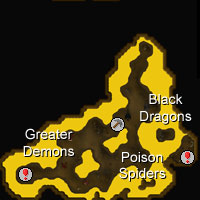

")
Lava Maze
Warning | Introduction | Location | Points of Interest | Personalities | Quests
The Lava Maze's Hall of Death | Miscellaneous
The Lava Maze's Hall of Death | Miscellaneous
Warning
It should come as no surprise that the Lava Maze, deep within the Wilderness and teeming with beasties, comes with a hefty disclaimer. If you are a greater demon or dragon then this warning can be skimmed over, but adventurers will need to heed it: stock up well on food and anti-poison, refresh your Prayer levels, equip yourself with an anti-dragonbreath shield and be aware of the monsters dangers around the maze. With this in mind, and everything prepared, take a deep breath and run in.
It should also be noted that although the area of the Lava Maze above ground is available to anyone, only members will be able to access the more dangerous tunnels below ground.
Introduction

Occasional tectonic shifts are no deterrent for the creatures of the Lava Maze, the most prominent of which - the black dragons and the infamous King Black Dragon - are extremely territorial and demand death from whoever chooses to trespass.
Location

The maze lies directly northwards of the Hobgoblin Mine and the Chaos Ridge, patrolled by the chaos dwarves.
Further to the south lies the Wilderness volcano, strewn with bones and unending battle.
To the west, notably for those who wish to conquer the Lava Maze, is the Evil Altar, where Prayer points can be replenished. Just be aware of revenants looking to prey upon the weak.
To the north is the vast skeletal fence, separating the free parts of the Wilderness from the members only areas.
To the east lies Red Dragon Isle.
Points of Interest

To the south-west waits Edmond, with his large sack of capes. Buy and hand these out to friends so that you can avoid getting an arrow in the back from an accident-prone friend in Clan Wars.
Many believe that the Lava Maze is the best, and one of the few places to mine runite. These rare rocks jut from the ground to the north of the Lava Maze and deep underneath, overseen by black dragons.
Initiates to the Lava Maze will be surprised to find a Fishing spot on the top level of the Lava Maze. By no means a safe hobby, angling for lava eels can be achieved with some form of oily and fire-resistant rod.
As mentioned before, the Evil Altar lies westward for those on low stocks of Prayer.

If you do pull that lever, Saradomin forbid, then you will be confronted by a floor of treasure. Oh, and the King Black Dragon, surly and ready to slice you with curved talons. Treasure chests line the walls, but if you wish to escape then the lever is situated on the southernmost wall.
Descending the central ladder of the Lava Maze, the adventurer will have brief respite before being attacked by greater demons, poison spiders and black dragons. It is worth mentioning that runite ore juts from the centre of this cave, though is by no means a safe source of the rare metal.
Personalities

King Black Dragon
The King Black Dragon, or KBD to his friends, is an ancient, huge, mean, vicious, near-undefeatable, and downright unsociable master of all dragons. He is also famous as he once held the record for the longest time spent as the 'Most Dangerous Creature in Runescape'. His three heads - and yes, they get along fine - blast volleys of concentrated balls of fire, ice and poison into enemies' paths. No doubt concerned that this may not be impressive enough, the King Black Dragon also bears claws of tremendous power, sharpened for the recreational goring and tearing of hapless adventurers.
The King Black Dragon has, as you would expect, no defensive weakness. Instead the King is merely 'less perfect' in certain areas, namely stab and Ranged attacks. This is getting ahead of ourselves, however; to damage the KBD you have to get close enough, and to do so involves receiving damage, which is the King Black Dragon's specialty. Ice attack follows fire attack, which in turn follows poison, so protection from each of these elements, anti-poison and an anti-dragonbreath shield are all a must.
The King Black Dragon hoards his dragonly stash beneath the Lava Maze, reachable by lever.
Quests
There are no quests to be started at the Lava Maze.
The Lava Maze's Hall of Death
![[image]](../../img/main/kbase/npc/area_guides/hill_giant.gif) Hill giants are large and lumbersome, though at Combat level 28 and wielding a large club, they should not be underestimated, if you are of a similar Combat level. Hill giants have a variety of drops, not forgetting big bones to help your Prayer skill rise.
|
![[image]](../../img/main/kbase/npc/area_guides/black_knight.gif) Black Knights are always plotting their next move against the White Knights. Aside from lurking in their castle north of Falador, they seem to be trying to navigate the Lava Maze... but seem stuck near the entrance to the south.
|
|
| Hill giants dumbly wander around the Lava Maze's top level. |
![[image]](../../img/main/kbase/npc/area_guides/deadly_red_spider.gif) One of the Lava Maze's mutated spiders, these over-sized pests have a nasty bite to match their size. Food is advised if you are on an extended stay, as they will inevitably have a bite or two before you leave.
|
![[image]](../../img/main/kbase/npc/area_guides/king_scorpion.gif) The largest strain of the scorpion genus, the king scorpions feel most at home at high temperatures. Strong venom bubbles within the sharp hook of its tail, while vice-like pincers look for fleshy adventurers to grapple with. Particularly vulnerable to Magic attacks.
|
|
| Deadly red spiders can be found all over the Lava Maze. | King scorpions roam the top level of the Lava Maze. |
![[image]](../../img/main/kbase/npc/area_guides/poison_spider.gif) The conventional spider extrapolated to a huge size, these poison spiders of the Lava Maze are very dangerous, and will happily snack on a wanderer or adventurer looking for a certain teleport lever...
|
![[image]](../../img/main/kbase/npc/area_guides/green_dragon.gif) These Wilderness stalwarts are a distant relation to the mighty Elvarg of Crandor, although far more agreeable. These particular green dragons are aware of the King Black Dragon and his domain, so avoid the western area of the Maze. Less defended against stab and Ranged attacks, the green dragon is a pale green shadow of Elvarg's might.
|
|
| The poison spiders guard the King Black Dragon's lair lever. | The green dragons roam the lands around the south of the Lava Maze. |
![[image]](../../img/main/kbase/npc/area_guides/lesser_demon.gif) Forced out of the lower echelons of the Lava Maze by the territorial greater demons, these wingless versions have found their way to the Wilderness surface. Guarding the entrances to these lower levels, the lesser demons are biding their time till these areas can be regained.
|
![[image]](../../img/main/kbase/npc/area_guides/greater_demon.gif) These looming forsaken are not the most deadly of the foes inhabiting the Lava Maze; although this makes them no less dangerous. Curving scimitar-like claws and thick hides of pure evil make them a strong adversary for those who do not dabble in the magical arts, while a hunger for new souls makes them an unlikely foe to be bypassed with a well-timed sprint.
|
|
| The lesser demons circle the entrances to both the black dragon and King Black Dragon caves. | Greater demons can be found in the black dragon cave. |
![[image]](../../img/main/kbase/npc/area_guides/black_dragon.gif) Head to toe in shimmering black scales, the black dragon is a distant relative of the King Black Dragon. No less friendly, they will still guard their domain with fevered intensity. Though stab attacks and Ranged attackers will do more damage than others, the black dragon has no real weakness and will demand the best from any adventurer it encounters.
|
| The black dragon guards the runite deep beneath the Lava Maze. |
Miscellaneous
- For those in possession of a muddy key, a chest toward the end of the Lava Maze contains a wealth of treasures that will be useful to the mid-level adventurer.
- Killing the KBD with a group of friends is a good bit of fun, if you think you have the levels to take him on!
- A number of items can be found strewn around the Lava Maze, including coins, a staff of earth, a gold necklace and various pieces of armour.

More articles in
Other
|
|